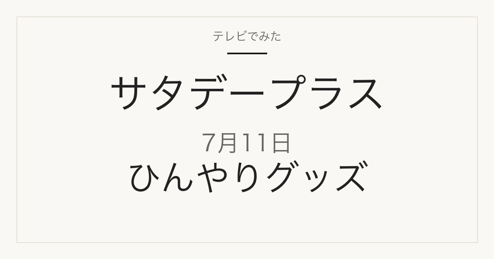

1位／番組掲載価格 3,278円
白元アース
テレビ紹介商品の記録メディア
2026年7月11日（土）放送
「ひたすら試してランキング」で調査された6品

順位・商品名・番組掲載価格は番組公式情報で確認しています。価格は2026年7月11日時点の番組調べで、現在の販売価格・在庫・取り扱いは変わります。
サタプラ独自の方法で10時間以上の徹底調査！
“クールネックリング”は①使いやすさ ②冷却力 ③持続時間の3項目、
“冷感スプレー”は①ひんやり感 ②使いやすさ ③コスパの3項目
を清水アナウンサーが調査し、各ジャンルのサタプラ的オススメベスト3を紹介。
通販で探すときは、内容量・個数・販売単位が番組の掲載と違う場合があるため、商品名と容量を合わせて確認してください。
1位／番組掲載価格 3,278円
白元アース
2位／番組掲載価格 3,520円
WIZ
3位／番組掲載価格 2,178円
白元アース
1位／番組掲載価格 1,485円
ときわ商会
2位／番組掲載価格 980円
レック
3位／番組掲載価格 968円
白元アース
2026年7月11日放送の1位は、白元アース「アイスノン ネッククーラー NEO」です。番組掲載価格は3,278円でした。
番組掲載価格は放送時点の番組調べです。販売店・時期・容量によって価格は変わります。購入前に商品名と内容量を確認してください。
MBS「サタプラ」ひたすら試してランキング ひんやりグッズ2番勝負
順位・商品名・番組掲載価格は2026年7月11日現在の番組公式情報によります。